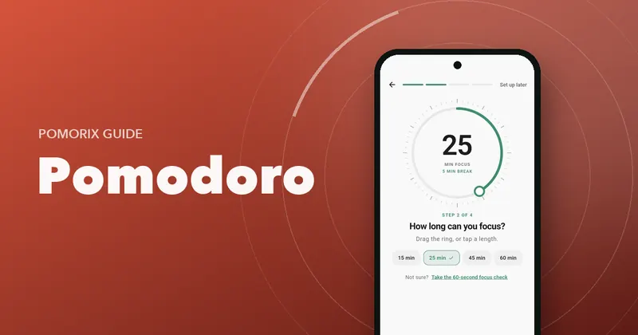

25/5, 50/10 or 90 Minutes? How to Choose Your Pomodoro Length
Compare the most popular Pomodoro intervals (25/5, 50/10, 52/17 and 90-minute blocks) and find the focus and break length that suits your work.

On this page
- The popular intervals at a glance
- 25/5: the classic
- 50/10: the deep work favourite
- 52/17: what the data says
- 90 minutes: the deep block
- Flowtime: no fixed length at all
- How to find your ideal interval in one week
- Match the interval to the task, not just the person
- How long should the break be?
- Questions people ask
Key takeaways
- 25/5 is best for starting, hard or boring tasks and tired days.
- 50/10 suits deep work once you're warmed up, such as writing, coding and problem sets.
- 90-minute blocks only work for experienced, well-rested focus on one demanding task, and need a real 15 to 20-minute break.
- Test one interval for a week and judge it by finished work and how you feel at the end of the day.
The classic Pomodoro is 25 minutes of work and a 5-minute break. But search for “best Pomodoro interval” and you'll find people swearing by 50/10, 52/17, 90 minutes and everything in between. Who's right?
All of them, for different work and different people. This guide compares the popular intervals, explains when each one shines and gives you a simple way to find your own.
The popular intervals at a glance
| Interval | Focus / break | Best for | Watch out for |
|---|---|---|---|
| Mini | 10–15 / 3 | Getting started, very low energy, ADHD-friendly starts | Too short for complex thinking |
| Classic | 25 / 5 | Most tasks, beginners, dreaded tasks, revision | Can cut off deep work mid-thought |
| Extended | 45–50 / 10 | Writing, coding, maths, deep reading | Harder to start; tempting to skip breaks |
| 52/17 | 52 / 17 | Knowledge work with long recovery breaks | Long breaks can drift |
| Deep block | 90 / 15–20 | One demanding task, experienced focusers | Fatigue; few people can sustain it |
| Flowtime | Open / proportional | Creative work, unpredictable tasks | Needs discipline to stop and rest |
25/5: the classic
The original Pomodoro interval is popular for a reason. Twenty-five minutes is short enough that almost any task feels doable, and the break comes before your attention runs dry. It's especially good for:
- Tasks you've been avoiding. “Just 25 minutes” lowers the barrier to starting.
- Revision and memorisation, where short, frequent sessions with breaks help you stay fresh.
- Days when your energy is low or your schedule is fragmented.
The downside: for work that needs a long warm-up (loading a complex codebase into your head, getting into a writing rhythm), 25 minutes can end just as you get going. That's when longer intervals make sense.
50/10: the deep work favourite
Doubling the session gives you a long stretch of uninterrupted thought and halves the number of context switches in a day. Many writers, programmers and graduate students settle here once the habit of focusing is established.
Two rules make 50/10 work:
- Take the 10-minute break seriously. After 50 minutes you need it. Move, hydrate, rest your eyes.
- Keep 25/5 as a fallback for tasks you're resisting or when you're tired.
52/17: what the data says
In 2014, the time-tracking company DeskTime looked at its most productive users and found that they tended to work for about 52 minutes, then take breaks of about 17 minutes. It's a single company's observation about its own users rather than a controlled experiment, but it's a useful reminder: the best performers weren't working nonstop, and longer focus went together with longer, real breaks.
90 minutes: the deep block
Some people schedule 90-minute deep work blocks, often citing research on expert performers. In studies of elite violinists, Anders Ericsson and colleagues noted that the best players practised in concentrated sessions that rarely went much beyond 90 minutes, with rest in between. The idea of natural 90-minute “ultradian” cycles during the day is popular, but the evidence for it is much weaker than the internet suggests.
Ninety-minute blocks can be excellent for a single demanding project when you're rested and practised at focusing. They're a poor fit for beginners, for afternoons after a bad night's sleep, or for tasks you dread. If you try them, follow each block with a 15 to 20-minute break away from screens, and plan no more than two or three a day. Read more in how to do deep work sessions.
Flowtime: no fixed length at all
With Flowtime (also called Flowmodoro), you start a count-up timer, work until your focus naturally dips, and then take a break proportional to how long you worked, for example one minute of break for every five minutes of focus. It's great for creative work where a fixed alarm would interrupt you. We compare it in detail in Flowtime vs Pomodoro.
How to find your ideal interval in one week
Instead of guessing, run a small experiment:
- Days 1–3: use 25/5 for everything. Notice when you feel cut off and when you feel drained.
- Days 4–6: use 50/10 for your hardest, most important task, and 25/5 for the rest.
- Day 7: compare. Which days did you finish more important work? On which days did you feel better at 5 pm?
Judge by two things: finished work and end-of-day energy. Not by how heroic a session felt. A good interval is one you can repeat tomorrow.
Signs your sessions are too long
- You regularly drift off in the last third of the session.
- You dread pressing start.
- You feel foggy for most of the afternoon.
Signs your sessions are too short
- The alarm keeps landing just as you get going.
- You spend a big chunk of each session re-loading context.
- You're skipping breaks to “just finish this”.
Match the interval to the task, not just the person
The best approach for most people isn't one fixed interval but a small set they switch between:
- 25/5 for admin, email, revision, and anything you're avoiding.
- 50/10 for writing, coding, problem sets and deep reading.
- Flow for creative sessions where you want to ride momentum.
How long should the break be?
A simple rule: break for about one fifth of your focus time. Five minutes after 25, ten after 50, fifteen to twenty after 90. After a full cycle of three or four sessions, take a longer break. Not sure how to use those minutes? Try these Pomodoro break ideas.
Questions people ask
What is the best Pomodoro interval?
There is no single best interval. 25 minutes of focus with 5-minute breaks is the classic and works well for most people starting out. Once you can focus easily, 45 to 50-minute sessions with 10-minute breaks often suit deep work better.
Is 50/10 better than 25/5?
50/10 gives you fewer interruptions and more time to get deep into a problem, so it's often better for writing, coding or long problem sets. 25/5 is easier to start and more forgiving, so it's better for tasks you're avoiding or when your energy is low.
What is the 52/17 rule?
It comes from a 2014 analysis by the time-tracking company DeskTime, which found its most productive users worked for about 52 minutes and then took about 17-minute breaks. It's an observation about one group of users, not a scientific law, but it supports the idea that longer focus blocks need longer breaks.
How long should a Pomodoro break be?
As a rule of thumb, about one fifth of your focus time: 5 minutes after 25, 10 after 50. After every three or four sessions, take a longer break of 15 to 30 minutes.